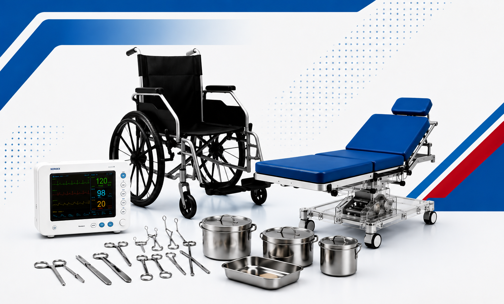

A trusted name in medical surgical supplies, committed to quality healthcare equipment since 2014

For over a decade, JJ Surgicals and Health Care, headquartered in Madurai, Tamil Nadu, has been a trusted Pan-India supplier of high-quality medical equipment, surgical supplies, educational training aids, and laboratory products — supporting healthcare professionals, hospitals, medical and nursing colleges, and healthcare institutions with reliable solutions at affordable prices.
We specialize in supplying products that comply with the standards and guidelines of the Indian Nursing Council (INC), ensuring that every product we deliver meets the highest standards of quality and reliability.
Our client base spans — all of whom trust JJ Surgicals for their equipment needs:
JJ Surgicals and Health Care
Madurai, Tamil Nadu
JJ Surgicals and Health Care
Madurai, Tamil Nadu
Welcome to JJ Surgicals and Health Care. Since our inception in 2014, our mission has been to provide high-quality medical, surgical, and educational healthcare products to hospitals, medical colleges, nursing colleges, and healthcare institutions across India.
We are committed to delivering reliable products, competitive pricing, and exceptional customer service. Our continued growth is built on trust, quality, and long-term relationships with our valued customers.
We look forward to supporting your healthcare and educational needs with excellence and dedication. Thank you for being part of our success.
To be the most trusted and reliable supplier of medical surgical equipment and nursing education products in Tamil Nadu. We are committed to delivering INC-compliant, high-quality products that support healthcare excellence at every level — from nursing students to experienced medical professionals.
To be recognized as the leading healthcare equipment supplier across South India, known for our unwavering commitment to quality, affordability, and customer satisfaction. We envision a future where every nursing institution and hospital has access to the best medical equipment at fair prices.
Every product we supply meets strict quality standards. We never compromise on quality — it's the foundation of our business.
Built on honest relationships with our clients. Our transparent pricing and honest recommendations have earned decades of trust.
We listen, understand your requirements, and provide the best solutions tailored to your institution's specific needs.
From product selection to delivery and after-sales support, we strive for excellence at every touchpoint of our service.
We supply complete setups for all nursing college laboratory requirements as per INC guidelines
Complete anatomical models, skeletons, organ models, torsos, charts and educational posters for anatomy studies.
All fundamental nursing care equipment including community bags, pocket kits, and clinical skills trainers.
Surgical instruments, SS wares, nursing manikins, and all equipment required for medical-surgical nursing training.
Paediatric simulators, infant CPR manikins, child nursing manikins, and child health assessment tools.
Advanced delivery simulators, midwifery trainers, OBG instruments, and gynaecological training models.
Community nursing bags, diagnostic kits, weighing scales, and public health equipment for community nursing training.
Let us help equip your institution with the best medical and nursing education products.